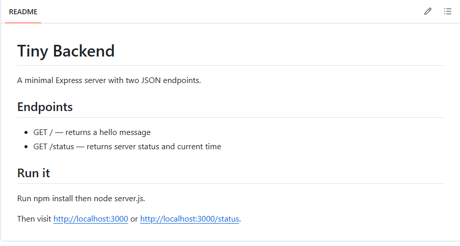

A minimal Express server with two JSON endpoints — my first backend assignment for the FlyRank internship.
GET / returns a hello message · GET /status returns server status and current timeA small Express.js server exposing two endpoints: one that returns a hello message, and one that returns server status and the current time. Built to practice basic backend/API fundamentals.

npm install then node server.js, then visit localhost:3000 or localhost:3000/status.